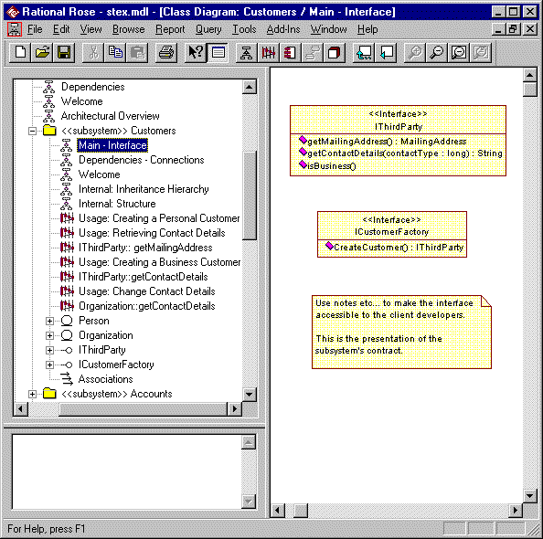

Standards: Informal
<<subsystem>>
 |
A subsystem that has been modeled informally. See <<subsystem>> for background
and details. |
| Related Information: |
|
Topics
Introduction 
This page defines the standards that are applied when a <<subsystem>> is defined informally.
The documentation of subsystems falls into two categories:
- Facade / Interface – the documentation of the subsystem required to make the
subsystem usable by its clients.
- Implementation – the documentation of the internal design of the subsystem
If a subsystem is defined formally (see Standards: Design
Subsystem and Standards: Formal Subsystem) then the facade
/ interface will be defined in a different package to the implementation of the subsystem.
In some cases the application of this pattern is overkill. In this case the subsystem itself will be defined informally and the subsystem will
contain both the documentation of the facade / interface and the implementation.
Naming Standard
The general package naming standards apply to <<subsystem>> packages (See Standards: Package Overview).
Diagramming Standards
External documentation:
This is as defined for the <<facade>> package
(see Standards: Facade Package).
Internal documentation:
This is as defined for the <<implementation>>
package (see Standards: Implementation Package).
For clarity all internal design class diagrams should have their names prefixed with
"Internal" to clearly distinguish them from the client supporting, external
documentation.
Constraints
In this case all of the elements contained by the subsystem will be private /
implementation except for those that make up the interface.
Examples
An example of a subsystem that declares its own interface is shown below with its
combined Main and Interface
diagram displayed. As can be seen from the browser where there is a mixture of
external documentation (Usage and Interface diagrams) and internal documentation (Internal
class diagrams and IThirdParty interface design diagrams) the contents of even a
very simple subsystem becomes confused when the interface and implementation are
modeled informally, in a single package. For this reason it is recommended that
subsystems are modeled formally (see Standards: Design
Subsystem and Standards: Formal Subsystem).

|